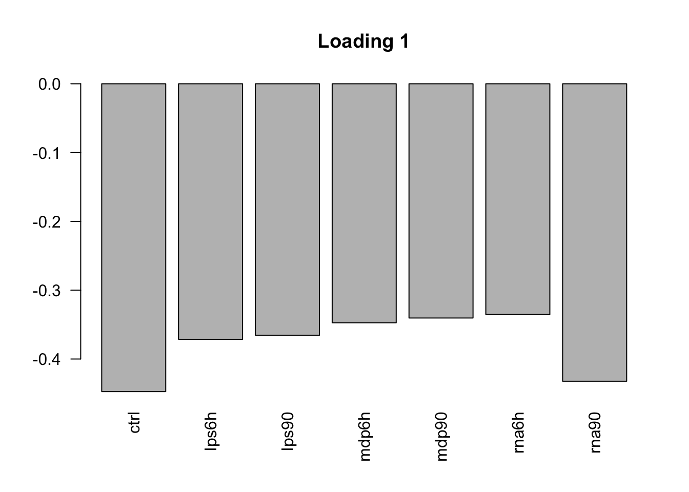
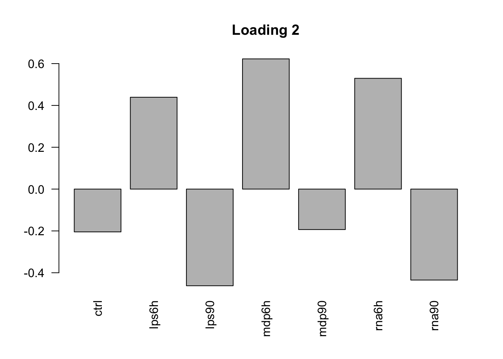
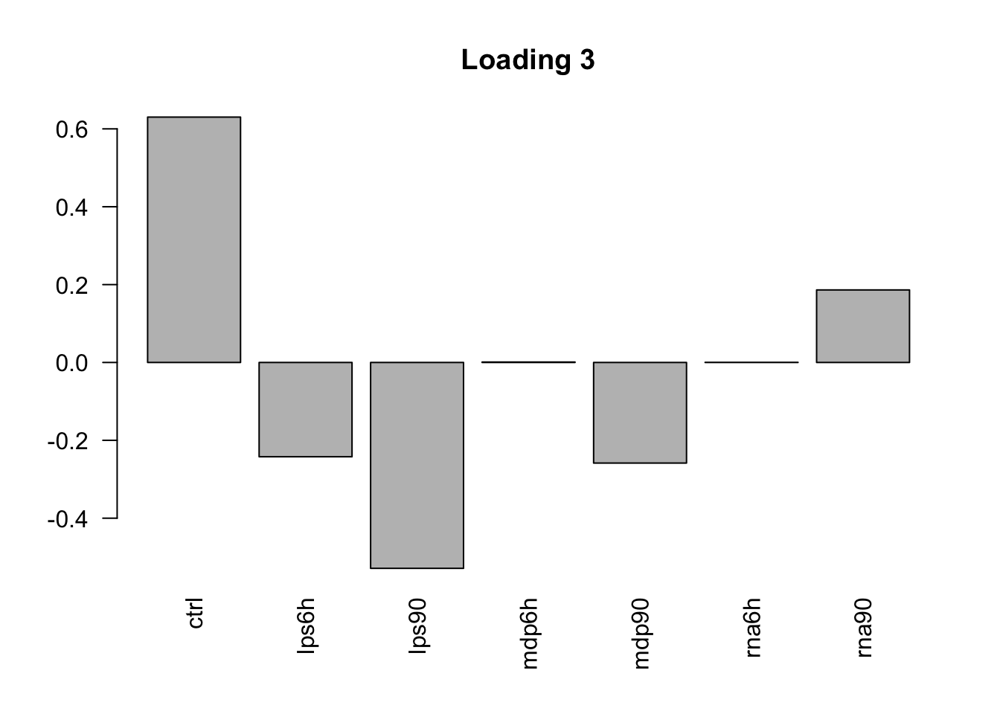
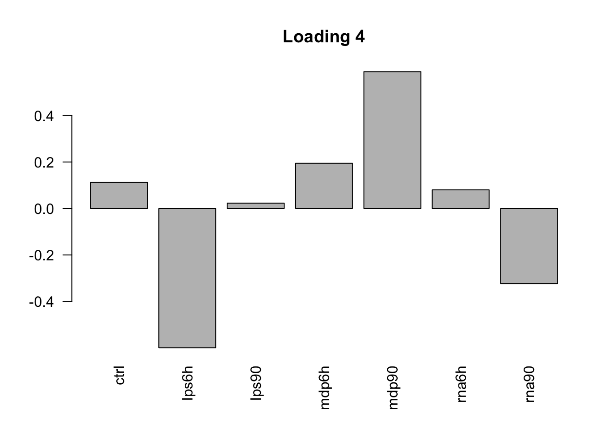
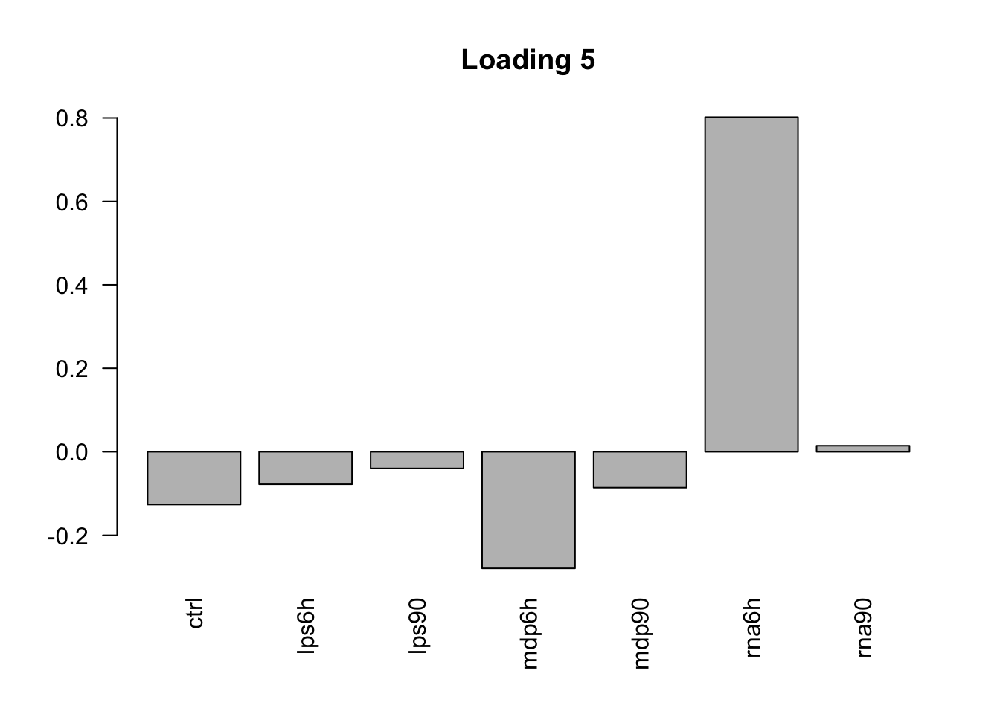
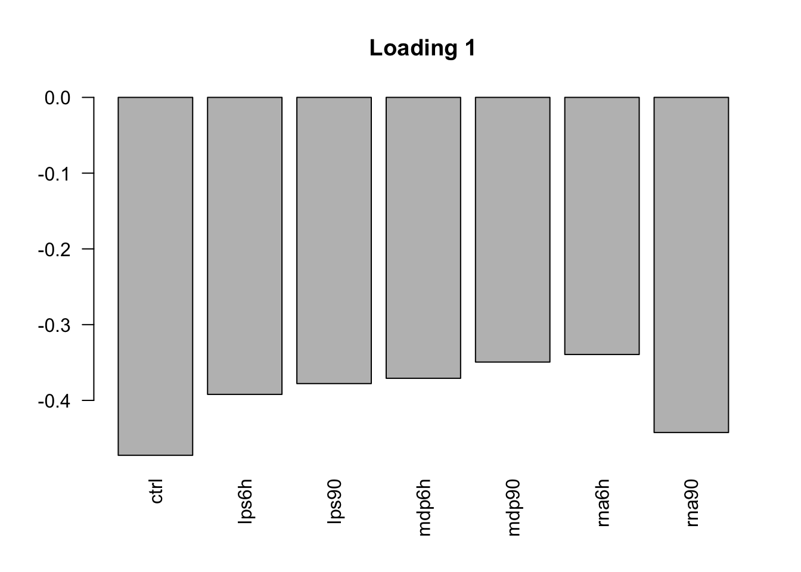
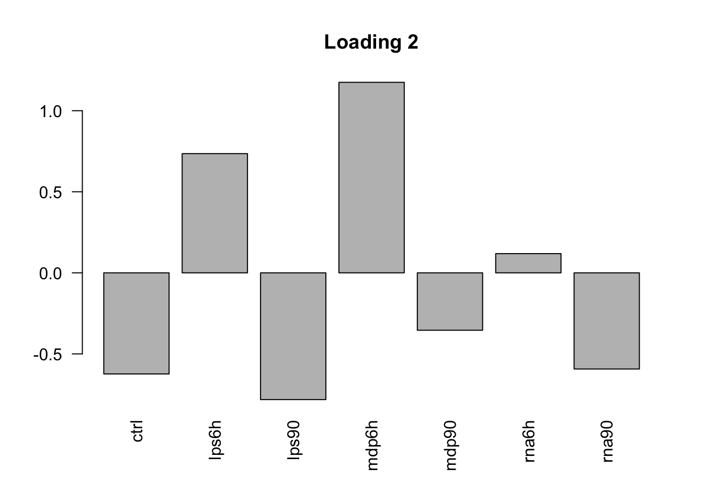
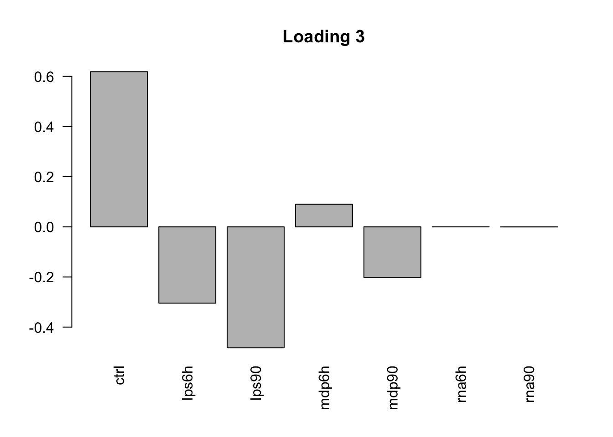
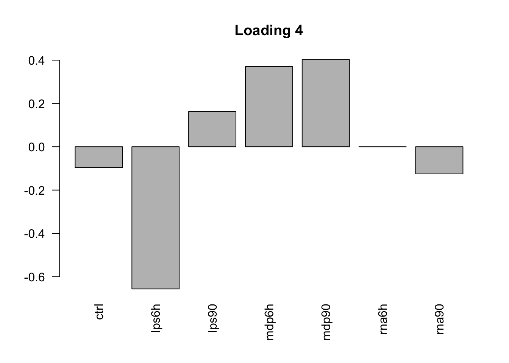
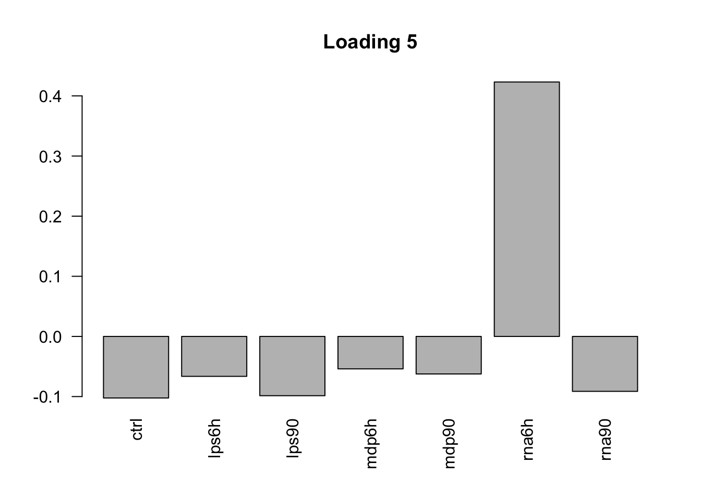

Warning in as.POSIXlt.POSIXct(Sys.time()): unknown timezone 'default/
America/Chicago'Last updated: 2017-11-16
Code version: d7cb2b5
# Load required packages
library(mashr); library(ExtremeDeconvolution); library(flashr2)Loading required package: ashr# read data
data = readRDS('../data/ImmuneQTLSummary.4MASH.rds')
data$max$se = data$max$beta/data$max$z
data$null$se = data$null$beta / data$null$z
# set parameters
K = 10\[ \tilde{Z}_{n\times 7} = Z-[\mu_{1}, \cdots, \mu_{7}]\]
D.center = apply(as.matrix(data$max$z), 2, function(x) x - mean(x))
mash_data_center = mashr::set_mash_data(Bhat = as.matrix(D.center),
Shat = matrix(1, nrow(data$max$z),
ncol(data$max$z)))Flash to extract the main pattern in \(\tilde{Z}\)Using greedy algorithm, we can set the variance structure for the residuals. The available types of variance structure are ‘by_column’ and ‘constant’. Since the columns of the data are different treatments, it is more reasonable to use ‘by_column’ structure, rather than ‘constant’. We apply flash on \[ \tilde{Z} = LF' + E \] where F is \(7 \times K\), L is \(n \times K\), E is \(n\times7\).
# use D.center
mash_data_flash = flash_set_data(as.matrix(D.center))
f_greedy = flash_add_greedy(mash_data_flash, Kmax=K, var_type = 'by_column')fitting factor/loading 1fitting factor/loading 2fitting factor/loading 3fitting factor/loading 4fitting factor/loading 5fitting factor/loading 6Backfitting
f_greedy_bf = flash_backfit(mash_data_flash,f_greedy, var_type = 'by_column')
F_flash = flash_get_f(f_greedy_bf)
L_flash = flash_get_l(f_greedy_bf)
saveRDS(list(f_greedy = f_greedy,
f = f_greedy_bf,
F_flash = F_flash,
L_flash = L_flash),
paste0("../output/Immune.flash2.center.greedy.K", K,".rds"))Check fit of Flash greedy:
FlashResult = readRDS('../output/Immune.flash2.center.greedy.K10.rds')
flash_get_pve(FlashResult$f_greedy)[1] 0.6534575871 0.0072519394 0.0026238426 0.0012990592 0.0007166277
[6] 0.0000000000flash_get_sizes(FlashResult$f_greedy)[1] 590882.8245 6557.4975 2372.5848 1174.6619 648.0038 0.0000F_greedy = flash_get_f(FlashResult$f_greedy)
row.names(F_greedy) = c("ctrl", "lps6h", "lps90", "mdp6h", "mdp90", "rna6h", "rna90")
barplot(F_greedy[,1], las=2, main='Loading 1')
barplot(F_greedy[,2], las=2, main='Loading 2')
barplot(F_greedy[,3], las=2, main='Loading 3')
barplot(F_greedy[,4], las=2, main='Loading 4')
barplot(F_greedy[,5], las=2, main='Loading 5')
Check fit of Flash greedy backfitting:
The first factor explains the main proportion of variance in effects.
flash_get_pve(FlashResult$f)[1] 0.688768772 0.015061368 0.009386965 0.005144375 0.023385454 0.000000000flash_get_sizes(FlashResult$f)[1] 623004.493 13623.294 8490.689 4653.186 21152.589 0.000The first factor is the overall summary of treatment effects.
row.names(FlashResult$F_flash) = c("ctrl", "lps6h", "lps90", "mdp6h", "mdp90", "rna6h", "rna90")
barplot(FlashResult$F_flash[,1], las=2, main='Loading 1')
barplot(FlashResult$F_flash[,2], las=2, main='Loading 2')
barplot(FlashResult$F_flash[,3], las=2, main='Loading 3')
barplot(FlashResult$F_flash[,4], las=2, main='Loading 4')
barplot(FlashResult$F_flash[,5], las=2, main='Loading 5')
# dominated by rna6hThe loading structure is not sparse.
sessionInfo()R version 3.4.2 (2017-09-28)
Platform: x86_64-apple-darwin15.6.0 (64-bit)
Running under: macOS High Sierra 10.13.1
Matrix products: default
BLAS: /Library/Frameworks/R.framework/Versions/3.4/Resources/lib/libRblas.0.dylib
LAPACK: /Library/Frameworks/R.framework/Versions/3.4/Resources/lib/libRlapack.dylib
locale:
[1] en_US.UTF-8/en_US.UTF-8/en_US.UTF-8/C/en_US.UTF-8/en_US.UTF-8
attached base packages:
[1] stats graphics grDevices utils datasets methods base
other attached packages:
[1] flashr2_0.2-3 ExtremeDeconvolution_1.3
[3] mashr_0.2-4 ashr_2.1-27
loaded via a namespace (and not attached):
[1] Rcpp_0.12.13 compiler_3.4.2 git2r_0.19.0
[4] plyr_1.8.4 iterators_1.0.8 tools_3.4.2
[7] digest_0.6.12 evaluate_0.10.1 tibble_1.3.4
[10] gtable_0.2.0 lattice_0.20-35 rlang_0.1.2
[13] Matrix_1.2-11 foreach_1.4.3 yaml_2.1.14
[16] parallel_3.4.2 mvtnorm_1.0-6 stringr_1.2.0
[19] knitr_1.17 REBayes_0.85 rprojroot_1.2
[22] grid_3.4.2 rmarkdown_1.7 rmeta_2.16
[25] ggplot2_2.2.1 magrittr_1.5 backports_1.1.1
[28] scales_0.5.0 codetools_0.2-15 htmltools_0.3.6
[31] MASS_7.3-47 assertthat_0.2.0 softImpute_1.4
[34] colorspace_1.3-2 stringi_1.1.5 Rmosek_8.0.69
[37] lazyeval_0.2.1 pscl_1.5.2 doParallel_1.0.11
[40] munsell_0.4.3 truncnorm_1.0-7 SQUAREM_2017.10-1This R Markdown site was created with workflowr